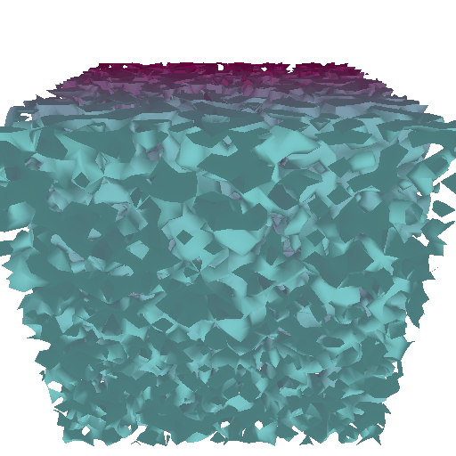
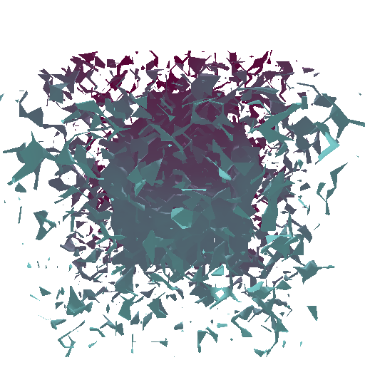
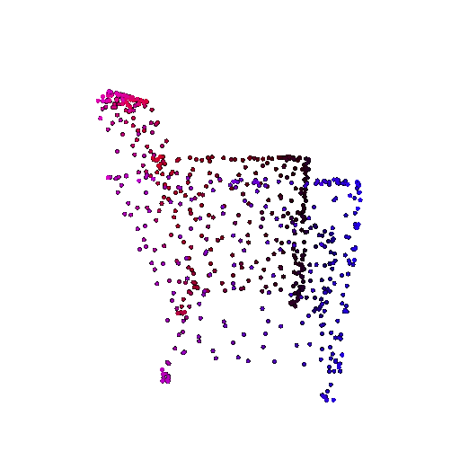

**CMSC848F-3D Vision**
**Project 2**
**Darshit Desai**
**Dir id: darshit; Email: darshit@umd.edu**
Exploring loss functions (15 points)
===============================================================================
This section will involve defining a loss function, for fitting voxels, point clouds and meshes.
Fitting a voxel grid (5 points)
-------------------------------------------------------------------------------
In this subsection, we will define binary cross entropy loss that can help us fit a 3D binary voxel grid.
Define the loss functions [here](https://github.com/848f-3DVision/assignment2/blob/main/losses.py#L4-L9) in `losses.py` file.
For this you can use the pre-defined losses in pytorch library.
Run the file `python fit_data.py --type 'vox'`, to fit the source voxel grid to the target voxel grid.
**Visualize the optimized voxel grid along-side the ground truth voxel grid using the tools learnt in previous section.**
**Answer-** For this I used the Binary Cross Entropy Loss function and applied Sigmoid on top of it to clamp probability values between 0.0 and 1.0. The relevant torch function for that is mentioned below:
```python
def voxel_loss(voxel_src,voxel_tgt):
# voxel_src: b x h x w x d
# voxel_tgt: b x h x w x d
# implement some loss for binary voxel grids
bceloss = torch.nn.BCEWithLogitsLoss()
loss = bceloss(voxel_src, voxel_tgt)
return loss
```
The various stages of the data fitting at different iteration numbers are shown below:
Ground truth Voxels

Voxel render status at 0 iterations

Voxel status at 1,000 iterations
Voxel status at 5,000 iterations
Voxel status at 100,000 iterations
Fitting a point cloud (5 points)
-------------------------------------------------------------------------------
In this subsection, we will define chamfer loss that can help us fit a 3D point cloud .
Define the loss functions [here](https://github.com/848f-3DVision/assignment2/blob/main/losses.py#L11-L15) in `losses.py` file.
We expect you to write your own code for this and not use any pytorch3d utilities. You are allowed to use functions inside pytorch3d.ops.knn such as knn_gather or knn_points
Run the file `python fit_data.py --type 'point'`, to fit the source point cloud to the target point cloud.
**Visualize the optimized point cloud along-side the ground truth point cloud using the tools learnt in previous section.**360-degree Renders (5 points)
**Answer-** For this as mentioned in the question I wrote a function for defining chamfer loss, I took some help from the pytorch3d documentation as it had the source code of the pytorch3d function, The function that I wrote for the chamfer loss is mentioned below:
```python
def chamfer_loss(point_cloud_src, point_cloud_tgt):
# point_cloud_src, point_cloud_src: b x n_points x 3
# implement chamfer loss from scratch
# Verify input shapes
assert point_cloud_src.shape[2] == 3, "Input point_cloud_src must have shape B x N x 3"
assert point_cloud_tgt.shape[2] == 3, "Input point_cloud_tgt must have shape B x N x 3"
# Calculate nearest neighbors using PyTorch3D's knn_points
source2target_knn = pytorch3d.ops.knn_points(point_cloud_src, point_cloud_tgt, K=1, norm=2)
target2source_knn = pytorch3d.ops.knn_points(point_cloud_tgt, point_cloud_src, K=1, norm=2)
# Calculate chamfer loss
source2target_dist = source2target_knn.dists[..., 0] # (B, N)
target2source_dist = target2source_knn.dists[..., 0] # (B, M)
loss_chamfer = source2target_dist.mean() + target2source_dist.mean()
return loss_chamfer
```
The various stages of the data fitting at different iteration numbers are shown below:
Ground truth point cloud
Point cloud render status at 0 iterations
Point Cloud status at 5,000 iterations
Point Cloud status at 10,000 iterations

Point Cloud status at 100,000 iterations
Fitting a mesh (5 points)
-------------------------------------------------------------------------------
In this subsection, we will define an additional smoothening loss that can help us fit a mesh.
Define the loss functions [here](https://github.com/848f-3DVision/assignment2/blob/main/losses.py#L17-L20) in `losses.py` file.
For this you can use the pre-defined losses in pytorch library.
Run the file `python fit_data.py --type 'mesh'`, to fit the source mesh to the target mesh.
**Visualize the optimized mesh along-side the ground truth mesh using the tools learnt in previous section.**
**Answer-**
For this I used the inbuilt pytorch3d function `pytorch3d.loss.mesh_laplacian_smoothing`, The following is the function definition as mentioned in the code:
```python
def smoothness_loss(mesh_src):
# implement laplacian smoothening loss
loss_laplacian = mesh_laplacian_smoothing(mesh_src, method="uniform")
return loss_laplacian
```
Ground truth Mesh
Mesh status at 0 iterations
Mesh render status at 500 iterations
Mesh status at 5,000 iterations
Mesh status at 100,000 iterations
Reconstructing 3D from single view (85 points)
===============================================================================
Image to voxel grid (20 points)
-------------------------------------------------------------------------------
In this subsection, we will define a neural network to decode binary voxel grids.
Define the decoder network [here](https://github.com/848f-3DVision/assignment2/blob/main/model.py#L149) in `model.py` file, then reference your decoder [here](https://github.com/848f-3DVision/assignment2/blob/main/model.py#L182) in `model.py` file.
We have provided a [decoder network](https://github.com/848f-3DVision/assignment2/blob/main/model.py#L55-L129) in `model.py`, but you can also modify it as you wish.
Run the file `python train_model.py --type 'vox'`, to train single view to voxel grid pipeline, feel free to tune the hyperparameters as per your need.
After trained, visualize the input RGB, ground truth voxel grid and predicted voxel in `eval_model.py` file using:
`python eval_model.py --type 'vox' --load_checkpoint`
You need to add the respective visualization code in `eval_model.py`
On your webpage, you should include visuals of any three examples in the test set. For each example show the input RGB, render of the predicted 3D voxel grid and a render of the ground truth mesh.
**Answer-**
For this I tried training three different models:
* Implicit MLP Decoder which was provided with the source code
* A 3D up convolution decoder model, where I flatten the latent code given by the linear layer of the encoder and then upsampled the output using `Conv3D` upto 32x32x32
* A simple linear fully connected network, where I reshape the last layer to 32x32x32
An important point to note is that during training none of the models had any activations in the output layer, hence in the evaluation a sigmoid was added to clamp the output probability between 0.0 and 1.0
I chose the simple linear FC network since it was faster to train out of all three and had comparable results in visualization and F1 score with 3D up convolution network, The model is shown below:
```python
self.decoder = nn.Sequential(
nn.Linear(512, 1024),
nn.ReLU(),
nn.Linear(1024, 2048),
nn.ReLU(),
nn.Linear(2048, 32*32*32))
```
The results of the three examples for the linear network evaluation are shown below:
* Example 1:
Input Image to the Linear Network
Ground truth Voxel Representation
Ground truth Mesh Representation
Voxel Prediction Render Representation
* Example 2:
Input Image to the Linear Network
Ground truth Voxel Representation
Ground truth Mesh Representation
Voxel Prediction Render Representation
* Example 3:
Input Image to the Linear Network
Ground truth Voxel Representation
Ground truth Mesh Representation
Voxel Prediction Render Representation
Image to point cloud (20 points)
-------------------------------------------------------------------------------
In this subsection, we will define a neural network to decode point clouds.
Similar as above, define the decoder network [here](https://github.com/848f-3DVision/assignment2/blob/main/model.py#L155) in `model.py` file, then reference your decoder [here](https://github.com/848f-3DVision/assignment2/blob/main/model.py#L215) in `model.py` file
Run the file `python train_model.py --type 'point'`, to train single view to pointcloud pipeline, feel free to tune the hyperparameters as per your need.
After trained, visualize the input RGB, ground truth point cloud and predicted point cloud in `eval_model.py` file using:
`python eval_model.py --type 'point' --load_checkpoint`
You need to add the respective visualization code in `eval_model.py`.
On your webpage, you should include visuals of any three examples in the test set. For each example show the input RGB, render of the predicted 3D point cloud and a render of the ground truth mesh.
**Answer-**
For this representation I followed the model architecture given in the comments of the starter code, I tried modifying the same architecture iteratively by adding and removing layers and increasing the output layer size upto 4096 neurons. I also experimented with the number of points the visualization although gets denser. More of it is dicussed in the hyperparameters tuning section.
The architecture is given as below:
```python
self.decoder = torch.nn.Sequential(
nn.Linear(in_features=512, out_features=1024),
nn.ReLU(),
nn.Linear(in_features=1024, out_features=2048),
nn.ReLU(),
nn.Linear(in_features=2048, out_features=4096),
nn.ReLU(),
nn.Linear(in_features=4096, out_features=3*self.n_point),
nn.Tanh()
)
```
The results of the three examples for the linear network evaluation are shown below:
* Example 1:
Input Image to the Linear Network
Ground truth Point Cloud Representation
Ground truth Mesh Representation
Point Cloud Prediction Render Representation
* Example 2:
Input Image to the Linear Network
Ground truth Point Cloud Representation
Ground truth Mesh Representation
Point Cloud Prediction Render Representation
* Example 3:
Input Image to the Linear Network
Ground truth Point Cloud Representation
Ground truth Mesh Representation
Point Cloud Prediction Render Representation
Image to mesh (20 points)
-------------------------------------------------------------------------------
In this subsection, we will define a neural network to decode mesh.
Similar as above, define the decoder network [here](https://github.com/848f-3DVision/assignment2/blob/main/model.py#L177) in `model.py` file, then reference your decoder [here](https://github.com/848f-3DVision/assignment2/blob/main/model.py#L220) in `model.py` file
Run the file `python train_model.py --type 'mesh'`, to train single view to mesh pipeline, feel free to tune the hyperparameters as per your need. We also encourage the student to try different mesh initializations [here](https://github.com/848f-3DVision/assignment2/blob/main/model.py#L174)
After trained, visualize the input RGB, ground truth mesh and predicted mesh in `eval_model.py` file using:
`python eval_model.py --type 'mesh' --load_checkpoint`
You need to add the respective visualization code in `eval_model.py`.
On your webpage, you should include visuals of any three examples in the test set. For each example show the input RGB, render of the predicted mesh and a render of the ground truth mesh.
**Answer-**
For this representation I followed the model architecture given in the comments of the starter code, I tried modifying the same architecture iteratively by adding and removing layers. Note I also used a different w_smooth value for the mesh model, More of it in the hyperparameters tuning section.
The architecture is given as below, Note for this I used the w_smooth value as 0.5:
```python
self.decoder = torch.nn.Sequential(
nn.Linear(in_features=512, out_features=512),
nn.ReLU(),
nn.Linear(in_features=512, out_features=1024),
nn.ReLU(),
nn.Linear(in_features=1024, out_features=1024),
nn.ReLU(),
nn.Linear(in_features=1024, out_features=2048),
nn.ReLU(),
nn.Linear(in_features=2048, out_features=3*mesh_pred.verts_packed().shape[0]),
nn.Tanh()
)
```
The results of the three examples for the linear network evaluation are shown below:
* Example 1:
Input Image to the Linear Network
Ground truth Mesh Representation
Predicted Mesh Representation
* Example 2:
Input Image to the Linear Network
Ground truth Mesh Representation
Predicted Mesh Representation
* Example 3:
Input Image to the Linear Network
Ground truth Mesh Representation
Predicted Mesh Representation
Quantitative comparisions(10 points)
-------------------------------------------------------------------------------
Quantitatively compare the F1 score of 3D reconstruction for meshes vs pointcloud vs voxelgrids.
**Provide an intutive explaination justifying the comparision.**
For evaluating you can run:
`python eval_model.py --type voxel|mesh|point --load_checkpoint`
**Answer-**
The F1 score plots for the three models are as follows:
F1 @ 0.05(VOX) = 81.916%
F1 @ 0.05(POINT) = 96.126%
F1 @ 0.05(MESH) = 92.034%
**Intuitive Explaination-**
From the above plots Quantitatively it can be said that-
* Voxels have the lowest average F1 score among all three representations, This is primarily because the voxel is rendered from 32x32x32 volume and hence the resolution is very low, This is also evident from the visualization of the voxels during fit_data script where the voxels removed block wise based on probability and the resolution is pretty much dependent on the volume chosen by the user
* Point Clouds achieve near perfect scores because of the resolution as well as the primary property of the point clouds inherent property of not enforcing any connectivity between the points, Hence the point cloud can be easily fit to the ground truth mesh. This is because the point clouds not enforcing connectivity and being able to move freely in space.
* Mesh had an intermediate F1 score, because of the use of an inital ico_sphere topology which simply cannot model holes or complicated topologies, Hence the mesh representation is not able to achieve the same F1 score as the point cloud representation. Also it is difficult to interpret connectivity from single view images as well as the requirement of predicting holes which leads to improper predicitons.
Camera Transformations (15 points)
===============================================================================
When working with 3D, finding a reasonable camera pose is often the first step to
producing a useful visualization, and an important first step toward debugging.
Running `python -m starter.camera_transforms` produces the following image using
the camera extrinsics rotation `R_0` and translation `T_0`:

What are the relative camera transformations that would produce each of the following
output images? You should find a set (R_relative, T_relative) such that the new camera
extrinsics with `R = R_relative @ R_0` and `T = R_relative @ T_0 + T_relative` produces
each of the following images:
  

**In your report, describe in words what R_relative and T_relative should be doing
and include the rendering produced by your choice of R_relative and T_relative.**
**Answer:** The camera transformations are done using `pytorch3d.renderer.FoVPerspectiveCameras`. The Rrelative and Trelative are used to define the camera extrinsics using the following formulas:
Rcamera = Rrelative @ R0
Tcamera = Rrelative @ T0 + Trelative
Where Rotation about x, y, z axis is defined as follows:
Rx = \(\begin{bmatrix} 1 & 0 & 0 \\ 0 & cos(\theta) & -sin(\theta) \\ 0 & sin(\theta) & cos(\theta) \end{bmatrix}\)
Ry = \(\begin{bmatrix} cos(\theta) & 0 & sin(\theta) \\ 0 & 1 & 0 \\ -sin(\theta) & 0 & cos(\theta) \end{bmatrix}\)
Rz = \(\begin{bmatrix} cos(\theta) & -sin(\theta) & 0 \\ sin(\theta) & cos(\theta) & 0 \\ 0 & 0 & 1 \end{bmatrix}\)
The relative camera transformations that would produce each of the above output images are as follows:
| Image | R_relative | T_relative | Description |
| --- | --- | --- | --- |
|
| \(\begin{bmatrix} 0 & -1 & 0 \\ 1 & 0 & 0 \\ 0 & 0 & 1 \end{bmatrix}\) | \(\begin{bmatrix}0 \\ 0 \\ 0\end{bmatrix}\) | Here the camera is rotated 90 degrees about the z-axis. |
|
| \(\begin{bmatrix} 0 & 0 & -1 \\ 0 & 1 & 0 \\ 1 & 0 & 0 \end{bmatrix}\) | \(\begin{bmatrix}3.0 \\ 0.0 \\ 3.0\end{bmatrix}\) | Here the camera is rotated 90 degrees about the y-axis and translated by 3 units along the x and z axis. |
|
| \(\begin{bmatrix} 1 & 0 & 0 \\ 0 & 1 & 0 \\ 0 & 0 & 1 \end{bmatrix}\) | \(\begin{bmatrix}0.0 \\ 0.0 \\ 6.0\end{bmatrix}\) | Here the camera is translated backwards by 6 units along the z-axis. |
|
| \(\begin{bmatrix} 1 & 0 & 0 \\ 0 & 1 & 0 \\ 0 & 0 & 1 \end{bmatrix}\) | \(\begin{bmatrix}0.25 \\ -0.25 \\ -0.5\end{bmatrix}\) | Here the camera seems to be translated along all 3 axis: (1)By 0.25 units along the x axis; (2) By -0.25 units along the y axis; & By -0.5 units along the z axis. |
Parametric Functions (10 points)
===============================================================================
Rendering Point Clouds from RGB-D Images (15 points)
-------------------------------------------------------------------------------
In this part, we will practice rendering point clouds constructed from 2 RGB-D images
from the [Common Objects in 3D Dataset](https://github.com/facebookresearch/co3d).

You should use the `unproject_depth_image` function in `utils.py` to convert a depth
image into a point cloud (parameterized as a set of 3D coordinates and corresponding
color values). The `unproject_depth_image` function uses the camera
intrinsics and extrinisics to cast a ray from every pixel in the image into world
coordinates space. The ray's final distance is the depth value at that pixel, and the
color of each point can be determined from the corresponding image pixel.
Construct 3 different point clouds:
1. The point cloud corresponding to the first image
2. The point cloud corresponding to the second image
3. The point cloud formed by the union of the first 2 point clouds.
Try visualizing each of the point clouds from various camera viewpoints. We suggest
starting with cameras initialized 6 units from the origin with equally spaced azimuth
values.
**In your submission, include a gif of each of these point clouds side-by-side.**
**Answer:** The gif of the point clouds is shown below.
360 Render of the first image's point cloud360 Render of the second image's point cloud360 Render of the union of the first two point clouds
Parametric Functions (10 points)
-------------------------------------------------------------------------------
**In your writeup, include a 360-degree gif of your torus point cloud, and make sure
the hole is visible. You may choose to texture your point cloud however you wish.**
**Answer:** The gif of the torus point cloud is shown below.
360 Render of the torus point cloud
Implicit Surfaces (10 points)
-------------------------------------------------------------------------------
**In your writeup, include a 360-degree gif of your torus mesh, and make sure the hole
is visible. In addition, discuss some of the tradeoffs between rendering as a mesh
vs a point cloud. Things to consider might include rendering speed, rendering quality,
ease of use, memory usage, etc.**
**Answer:**
**Part 1:**
The gif of the torus mesh using Implicit Surfaces is shown below.
360 Render of the torus mesh using Implicit Surfaces
**Part 2:**
The tradeoffs between rendering as a mesh vs a point cloud are as follows:
Generating a point cloud with parametric functions gives several advantages. One advantage is the ease with which point clouds can be generated by simply sampling the functions in a given limit. In our case it was from 0 to 2π. During the point generation stage, memory usage is linear (O(n)), as it depends on the number of points to be stored. The quality is tied to the number of points being sampled and can be adjusted by increasing the number of points from 100 to a 1000. In my case I used 300 points. But this is a sparse representation as compared to others like meshes.
While, In case of rendering surface mesh from implicit functions or i.e., signed distance functions involves constructing a voxel grid which as the name suggests would occupy cubic memory or (O(n^3)) space. The process then employs marching cubes algorithm that matches cubes to find points on the surface wherever the distance function approaches zero. The computations for all these combined is also of cubic complexity which is larger then the parametric approach. The quality of the mesh is also dependent on the resolution of the voxel grid. The higher the resolution, the better the quality of the mesh. The mesh is also a dense representation as compared to the point cloud.